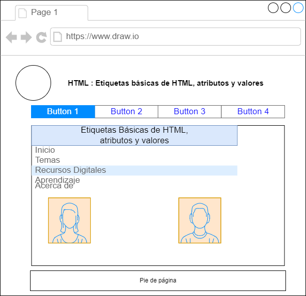

Este sitio tiene como propósito contribuir al aprendizaje sobre HTML y CSS para todos los estudiantes mediante el uso de
recursos educativos digitales. El enfoque es sobre las temáticas: Etiquetas Básicas de HTML, atributos y valores.
Etiquetas Básicas de HTML

Las etiquetas HTML son indicadores de marcas de hipertexto que dan formato y estructura al contenido de las páginas web.
Cada etiqueta indica y representa un atributo que los navegadores deben interpretar y mostrar al usuario cuando visita cualquier sitio en internet. (Copola,2022)
Su escritura se da entre signos <> el cual indica la apertura de la etiqueta y indica el cierre.
La primer etiqueta al inicio del desarrollo de la página es < HTML > y al finalizar se cierra igualmente con la misma etiqueta con el / antes de la palabra < /HTML >
Atributos y valores

Son los valores o propiedades que se añaden a una etiqueta HTML, lo que otorga una cualidad o comportamiento específico a la etiqueta. (Sánchez,2021)
El atributo, es el que diferencia a un elemento y se escribe antes del signo de igual (=), junto al elemento de la etiqueta, únicamente en la apertura, y antes de la variable. Por ejemplo: < font face ="Arial" >. Este texto aparecerá en tipografía Arial.
El atributo es el tipo letra, es decir: face.
El valor, es la característica del atributo de una etiqueta, como por ejemplo color, tamaño, tipo de letra, y se escribe generalmente entrecomillado "" después del signo de igual. En el ejemplo de atributo, la variable es Arial.
